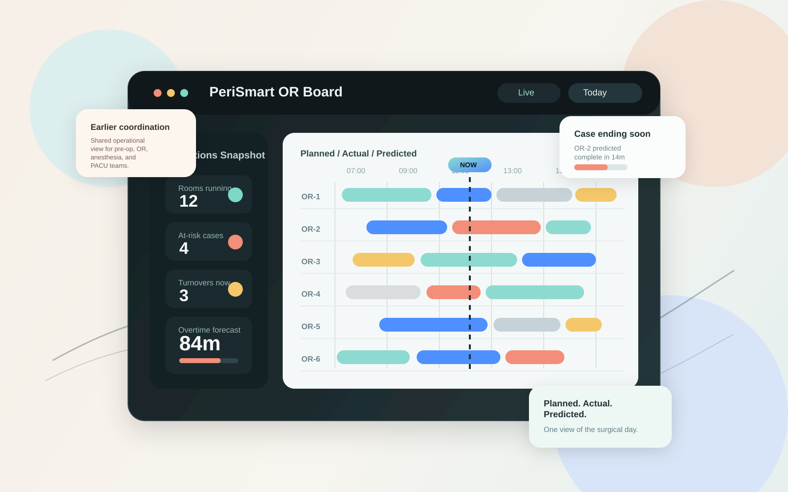
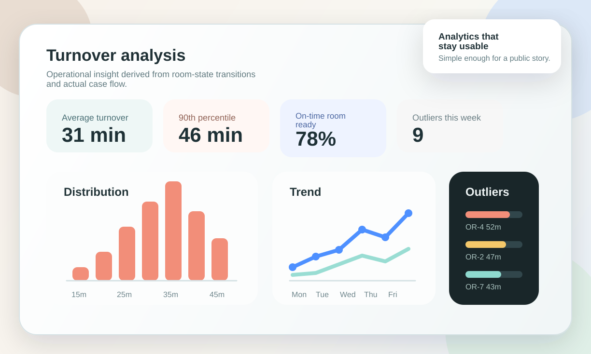

Real-time visibility
See what is happening now in each room without relying on status calls, walking, or fragmented updates.
PeriSmart gives perioperative teams a real-time operational view of every room, combining planned, actual, and predicted timelines so coordination can happen earlier and with less friction.

See what is happening now in each room without relying on status calls, walking, or fragmented updates.
Use actual milestones to understand what is likely to happen next and when downstream teams should prepare.
Route alerts and activity signals earlier so the right people can coordinate before delays become disruptive.
Turn execution data into actionable analysis for turnover, idle time, utilization, and schedule accuracy.
Use FHIR, HL7v2, CSV, or manual entry to establish planning context without replacing existing schedulers.
Camera-based workflow awareness helps capture milestones and reconcile planned versus actual progression.
Room status, turnover state, and predicted timing become easier to trust and easier to act on.
Alerts and runway help pre-op, anesthesia, OR, and PACU teams prepare before bottlenecks compound.


Reduce status chasing and keep the room board grounded in what is actually happening.
See delays, turnover pressure, and remainder-of-day risk in one operational view.
Get a clearer sense of room progression and upcoming transitions across the day.
Prepare earlier using predicted timing and targeted operational notifications.
PeriSmart is designed as an operational intelligence layer for the surgical day. Use the website to establish clarity, then move into a direct discussion about fit, deployment, and workflow priorities.